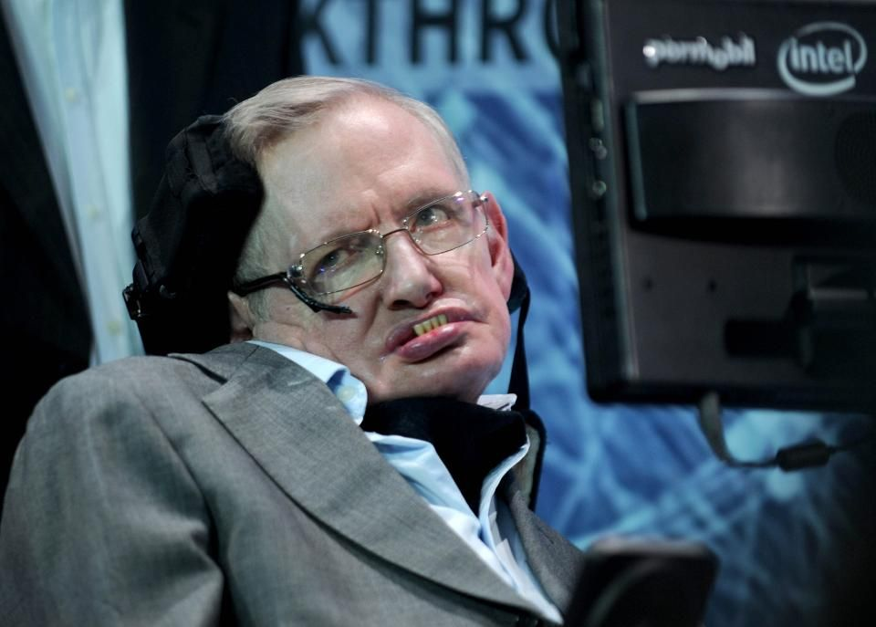

Famous People Astrophysicists and people who contributed to astronomy
Albert Einstein
Albert Einstein was a German-born theoretical physicist who developed the theory of relativity, one of the two pillars of modern physics (alongside quantum mechanics). His work is also known for its influence on the philosophy of science. He is best known to the general public for his mass–energy equivalence formula E = mc2, which has been dubbed "the world's most famous equation". He received the 1921 Nobel Prize in Physics "for his services to theoretical physics, and especially for his discovery of the law of the photoelectric effect", a pivotal step in the development of quantum theory. Near the beginning of his career, Einstein thought that Newtonian mechanics was no longer enough to reconcile the laws of classical mechanics with the laws of the electromagnetic field. This led him to develop his special theory of relativity during his time at the Swiss Patent Office. In 1905, called his annus mirabilis (miracle year), he published four groundbreaking papers, which attracted the attention of the academic world; the first outlined the theory of the photoelectric effect, the second paper explained Brownian motion, the third paper introduced special relativity, and the fourth mass-energy equivalence. That year, at the age of 26, he was awarded a PhD by the University of Zurich.
Information taken from above.
Stephen Hawking

In 1963, Hawking was diagnosed with an early-onset slow-progressing form of motor neurone disease (also known as amyotrophic lateral sclerosis (ALS) or Lou Gehrig's disease) that gradually paralysed him over the decades. After the loss of his speech, he was able to communicate through a speech-generating device—initially through use of a handheld switch, and eventually by using a single cheek muscle. Hawking's scientific works included a collaboration with Roger Penrose on gravitational singularity theorems in the framework of general relativity and the theoretical prediction that black holes emit radiation, often called Hawking radiation. Hawking was the first to set out a theory of cosmology explained by a union of the general theory of relativity and quantum mechanics. He was a vigorous supporter of the many-worlds interpretation of quantum mechanics. Hawking achieved commercial success with several works of popular science in which he discussed his theories and cosmology in general. His book A Brief History of Time appeared on the Sunday Times bestseller list for a record-breaking 237 weeks. Hawking was a Fellow of the Royal Society, a lifetime member of the Pontifical Academy of Sciences, and a recipient of the Presidential Medal of Freedom, the highest civilian award in the United States. In 2002, Hawking was ranked number 25 in the BBC's poll of the 100 Greatest Britons. He died on 14 March 2018 at the age of 76, after living with motor neurone disease for more than 50 years.
Information taken from above.
Neil deGrasse Tyson
Tyson studied at Harvard University, the University of Texas at Austin, and Columbia University. From 1991 to 1994, he was a postdoctoral research associate at Princeton University. In 1994, he joined the Hayden Planetarium as a staff scientist and the Princeton faculty as a visiting research scientist and lecturer. In 1996, he became director of the planetarium. Tyson's research has focused on observations in cosmology, stellar evolution, galactic astronomy, bulges, and stellar formation. He has held numerous positions at institutions including the University of Maryland, Princeton University, the American Museum of Natural History, and the Hayden Planetarium.